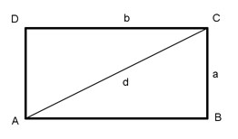

Flächenberechnungen Aufgabe 69 Die Diagonale eines Rechtecks hat eine Länge von 8 cm. Die Seite a ist 3 cm lang. Wie groß sind die Fläche A und die Seite b?  Satz von Pythagoras im Dreieck ABC: d² = a² + b² |-a² b² = d² - a² b² = 8² - 3² b² = 64 - 9 b² = 55 |√ b = 7,4 cm A = a * b = 3 cm * 7,4 cm = 22,2 cm²